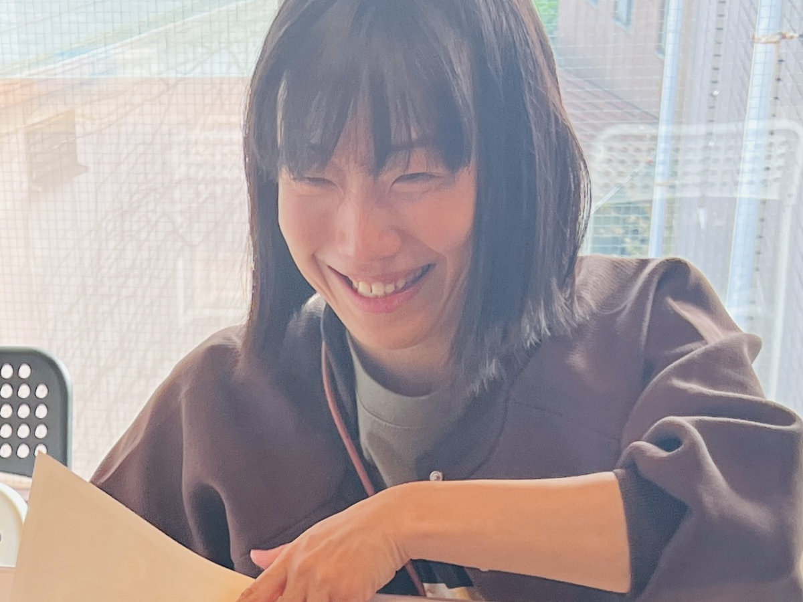

01
日本語「表現する力」を一生の武器に
学び続ける力の基盤として、日本語の学びを重視しています。
- 「読む」 — 物語の面白さに触れる
- 「ことば」 — 語彙の獲得を目指す
- 「書く」 — 創造的に作文する
これら三本柱で、個に応じたやり方で学びます。
 とらべ
とらべ


「歩いてもいい、止まってもいい」
「歩いてもいい、止まってもいい」
歩止歩止
— HODO HODO —
右足と左足、両足で自分のペースで学んでいくことができる。
止まることも動き。自分の現在地を知る、振り返ることができる。
自由な環境で、自分のペースで学ぶことができます。
一人ひとりの興味関心や特性に合わせた学びを実現します。
学校の授業が一律すぎて、うちの子には合っていない気がする。
決まった科目・時間割より、もっと自由に学ばせてあげたい。
少人数で、一人ひとりと向き合ってくれる場所を探している。
学校に行き渋っている。でも家にいるだけでは不安…
その選択肢の一つとして、
とらべがあります。
2004年設立の「東京コミュニティスクール（TCS）」が20年以上にわたり培ってきたノウハウを活かした第2校としてオープンしました。
学び続ける力の基盤として、日本語の学びを重視しています。
これら三本柱で、個に応じたやり方で学びます。
「私たちはどのように自分らしく生き続けるのか？」などの6つの探究領域のもと学びます。
日々の公園などに加え、多くのアウトドアイベントを用意しています。
畑・川遊び・登山・乗馬・ムササビ観察・スキーなど。
アウトドアに不安がある場合は、無理せず自分のペースで参加を選択できます。
学期ごとに評価を作成し、子どもの現状から将来像まで視野を広げた「学びの方向性」をまとめます。
 TORABE HOUSE
TORABE HOUSE
スタッフが組み立てる時間の他、子どもが自分で選ぶ「余白」の時間がたっぷりあります。「つくりたい」「しりたい」など、一人ひとりがやりたいことを選べます。
基礎となる日本語の学びや、それぞれの課題に取り組みます。
みんなで昼食をとった後、探究活動やマイプロジェクトを進めます。
一日の学びを振り返り、使った場所を綺麗にします。
多様なバックグラウンドを持つスタッフが、子どもたち一人ひとりに寄り添います。

Director東京コミュニティスクール（TCS）に出会ったのは就活を控えた大学生の時。大学で自閉症やダウン症など障害がある子どもたちと過ごすサークルに参加したことから、人の成長や教育ということに関心を持ち始め、それをライフワークにしたいと考えていた頃でした。これまで、TCSには、スタッフ、理事、保護者と様々な立場で携わってきました。
TCSに出会ってくれたご家庭の中には、不登校を経験しているケースもありました。私は、子どもが学校に通えていない現状を見るより、TCSがよりよい学び場であることが子どものためになると信じて、TCSの学びをいかによくするかということに尽力してきました。
転機となったのは、2019年に、東京都フリースクール等ネットワーク（TFN）の立ち上げに関わり、設立と同時に事務局長に就任したことです。活動を続ける中で、居場所がない、感覚の過敏さ、理解されないことへの不安、他の選択肢を選ぶパワーさえ失っている、不登校が子どもや保護者にもたらす深刻な現状に触れました。
そこで感じたことは、不登校（学校に通えない状態）ではなく、不学（学びたいのに学びたいように学べていない状態）を解決したいということでした。
子どもたちには、「やりたい・知りたい・つくりたい・考えたい・やりとりしたい」、各々が学びたいという気持ちを持っています。その気持ちを失わせることなく、学ぶことを楽しんでほしい。
こうして、「学びの選択肢を提案し、学びを選べる時代へ」というTCSの思いを実現するために、TCS歴20年を経て、新たに得たミッションが「とらべ」の開校・運営です。
「子どもを知るところから始める」 「子ども自身が動く」 「ラーニングコミュニティとして、大人も学び続ける」 「生きていく上で大切な概念の獲得」 「成長を促進するための評価」
というTCSカルチャーを維持しつつ、「学び続ける人・創造し続ける人」という目指す学習者像はそのままに、「余白の中で学びを組み立てる」という、東京コミュニティスクールとは違う学びのスタイルを提案することが試されています。
子どもの個性は様々で、学び方だって多様なはず。誰もが積極的に自分に合った学びを選択できる環境、それが公教育で実現できれば、我々の役目は終わりだと思っています。
その実験場として、とらべは生まれました。とらべにワクワクしてくださる方と共に、とらべを創っていきたい。一緒にとらべを創ってくれる、子どもたち・保護者・スタッフを待っています。
 Master
Master
1. なぜ大人は忘れてしまうのか？
小学生のころは明るく元気な少年だったと思うのですが、中学２年になるとそんな自分の「やり方」がわからなくなり、毎日、学校に行くのもつらくなりました。なぜか先生たちとうまく行かず、テストで点が取れていないわけでもないのに、通知表は悪くなっていく一方。それでも、そういう言葉になりきれない不安や不満を担任の先生に打ち明けてもみたのですが、全く理解してもらえませんでした。
「自分だって子どもだったはずなのに、なんで忘れてしまうんだろう？」
自分だけは大人になっても子どものときの感覚を忘れない。そう強く心に誓ったのでした。
2. デンマーク、新しい価値観との出会い
30代になるタイミングでデンマークのフォルケホイスコーレと出会いました。フォルケホイスコーレは16歳以上なら誰でも入れる「大人の学校」として知られる場所で、デンマーク国内だけで70近いフォルケホイスコーレがありました。そのうちの一つに入学し、世界中から集まった人々との寮生活を共にし、自分が学びたいと思う授業を選択しながら国際情勢や政治哲学、衝突と戦争という堅い科目から、体育や映画製作、アート＆クラフトなどの軽い科目まで履修して１年間を過ごしました。
フォルケホイスコーレで過ごす中で、デンマークという国ではいかに「普通」という概念が希薄かということに驚きました。「普通」がないとは言わないけれど、みんなそれに囚われていないのです。日本での生活は、たくさんの「普通」に縛られたものだったんだなと気づきました。また自分に合う学校が存在しないとき、自分たちでそれを作ってしまえばいい、という自由な発想がありました。帰国後、じゃあ自分でできることをかたちにしてみようと思いました。
3. フリースクールを作ってみる
2016年から６年間、栃木県で「小山フリースクールおるたの家」というフリースクールを経営しました。自分にできることはなにか？という問いから日本が抱える不登校の問題に気づき、一軒家を借りて日中開放し、小中学生を受け入れることにしました。ただ場所がある、ということが、子どもたちにとってどれだけ大切なことか。学校外の選択肢を一つ作ることに大きな意義を感じました。
4. 積極的な学びを経験する
学校で疲弊した子どもたちのエネルギーの回復を優先することと、学びを取り入れていくこととのギャップをどう埋めるかという部分に葛藤を抱えていました。そういったときに東京コミュニティスクールと出会い、コロナ禍でフリースクールを一度閉じ、より積極的に学びを作っていくTCSに入職するという決断をしました。
5. マスターとしての役割
とらべが目指すのは、まさに私が経験してきたフリースクールとTCSの学びの間の部分です。個人個人の成長をしっかりと見極めながら、彼らにあった学びを提案していく。それがとらべのマスターとしての仕事だと考えています。
 Anchor
Anchor
分かりたい気持ち
「人の気持ちを理解できる弁護士になりたい」小学校の卒業文集に書いた私の夢です。大切な人に理解して貰えなかった経験から生まれた、私の中の根っことなる気持ちです。ただ、この夢が中学校卒業時には「アーティスト」に変わることになる。その人生の分岐点となったきっかけは、密やかで激しい揺らぎでした。中1の時、学級委員だった私は教壇に立ち文化祭について話をしていました。向かって左手側、前から4列目の席に座っていたTは、40人の中の1人として、ただ自分の席に座っていた。でも、みんなの前で何かをそれらしく話している私なんかよりも、茶色い重めの前髪の間から世界を見ている彼女の方がずっと信頼できるような、そういうものが彼女にはあった。そして察したのです。私には見えていない世界がある。ここにいては見えない世界がある。分かりたい。その瞬間、とぷん、と世界の裏っかわに潜ったような、そんな感覚をくっきりと覚えています。深い深い海でした。広く厳しく面白い世界でした。
分けられない思い
3歳から音楽を始め、絵本や小説も大好きだった私には、音楽も美術も文学も全てが分かち難く支え合って存在し、それぞれがそれぞれの言い換えだったり、部分的には溶け合っていたりするような感覚が幼い頃からありました。そして、実は学問もほとんど変わりなく、全ては美しさという点で私の中ではくっついている。なんてことを考えていた中3の冬、仲の良かった美術の先生に「お前、旭美（出身校の俗称）行けば？」と言われ、カルトンを抱えてデッサンを始めました。元々答えの決まっていることにはあまり興味が持てない性分でしたし、正解のない表現の世界にこそ自分の時間を費やす価値がある、という直感に従い、後戻りはできない自覚もなく芸術の道を選びました。
分からせてもらったこと
そして、1学年普通科9クラスに美術科が1クラスという編成の公立高校に進学しました。すごい学校だった。すごい時間だった。何があって何がなかったのか、今こそ深ーく考えているわけですが、本当の自由があったことは確か。教師と生徒間には尊重があり、そこは寛容性に満ちていた。何かを押し付けられた覚えはなく、自主自律に終始して、本質的で上質な自由を謳歌した3年間でした。根底に揺るぎない信頼があり、場に対して、他者に対して、自分に対して、自分の将来に対して、自分と自分の力と世界への信頼感を全身に浴び続けるような時間でした。あなたの人生は信頼に値する、と。
分かち合うという自分の使い方
勿論それから紆余曲折あり、1人娘の子育ても終わりに近づいてきた2025年、とらべのオープンに関わるご縁をいただきました。仕事や子育てをしながらも、芸術のみならず、学問という美しさからも逃れられなかった私は、現在も人間性心理学やコミュニケーション学を中心に学び続けています。様々な貴重な経験や学びから受け取ってきた素晴らしい心震わすものーー総称でいうと「愛」を、私を通して誰かに届けられたらいいなぁ、それができたら最高だな。こどもたちと分かち合いながらどこまでも成長していきたいです。
お住まいの自治体によっては、フリースクール利用に対する助成金制度が設けられている場合があります（例：東京都フリースクール等利用者助成金 上限2万円/月）。制度の有無・内容は自治体や年度によって異なり、必ずしも利用できるとは限りません。詳細はお住まいの自治体またはスタッフへお問い合わせください。
自治体の助成金が適用される場合、実質負担が軽減される可能性があります
（試算例：990,000円 − 最大240,000円 = 約750,000円／年）
〒165-0026
東京都中野区新井2-35-2
03-5318-9700 繋がらない場合はこちら： 03-5989-1869
中野駅北口より徒歩15分
NPO法人東京コミュニティスクール
{{ faq.a }}
他にご不明な点は、見学・説明会でも何でもお聞きください。
他スクール情報も提供する個別相談を実施中です。
まずはお子さんと一緒に、雰囲気を感じに来てください。